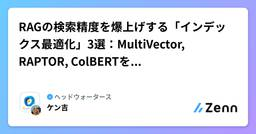
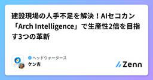
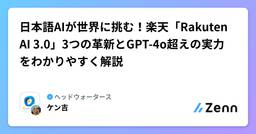
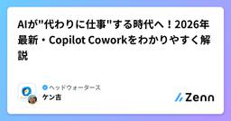
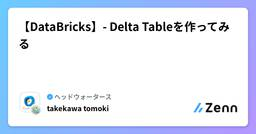
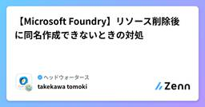
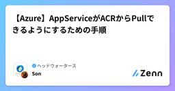
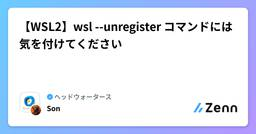
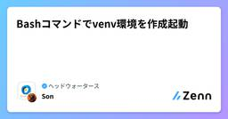

ヘッドウォータースのフィード
https://zenn.dev/p/headwaters
株式会社ヘッドウォータースのテックブログです。 AIエージェント、生成AI、LLM、Azureのサービスや資格、IoT、XR系などData&AIとApp modernizeに関して幅広く投稿します！
フィード
uvへの一歩を踏み出したい！
ヘッドウォータースのフィード
はじめにこれまでプロジェクト内では uv が使われていたものの、正直なところ仕組みをあまり理解しないまま使っていました。仮想環境や依存管理周りはなんとなく避けがちだったのですが、今回あらためて学習しながら整理してみようと思い、記事にまとめてみます！ uvとはuvとは、Rust製でpipやvenvより10~100倍高速な次世代のPythonパッケージ・環境構築ツールです。Astral社が開発し、パッケージインストール、プロジェクトの依存関係解決、仮想環境作成、Pythonバージョン管理までを1つのツールで完結するオールインワンツールです。ちなみに、Pythonコードのチェ...
1日前

RAGの検索精度を爆上げする「インデックス最適化」3選：MultiVector, RAPTOR, ColBERTを徹底比較
ヘッドウォータースのフィード
はじめにRAG（Retrieval-Augmented Generation：検索拡張生成）を実装してみたものの、「思ったより検索精度が出ない...」と悩んでいませんか?実は、単に文書を細切れにしてベクトル化する「Naive RAG」だけでは限界があります。本記事では、インデックス化の工夫で検索精度を劇的に向上させる3つの手法をわかりやすくまとめました。 この記事で分かることMultiVectorRetriever、RAPTOR、ColBERTの仕組みと違いそれぞれの手法がどんな場面で使えるか実装時のコストや難易度の比較実際に選ぶべき手法の判断基準 前提知識：...
2日前
【ワークショップ記録】Figma Makeで変わるUI制作の常識。AIに「伝わる」プロンプトの正解とは？
ヘッドウォータースのフィード
2025年も終盤に差し掛かった12月3日、私たちのUXチームでは、今話題の「Figma Make（AIプロトタイピング機能）」を使い倒すワークショップを開催しました。「AIでデザインが変わる」と言われて久しいですが、実際に手を動かしてみると、期待以上の驚きと、AI時代におけるUI/UXデザイナーの「新しい役割」が見えてきました。今回はそのワークショップの熱量をそのままに、私たちが得た学びをシェアしたいと思います！ なぜ今、Figma Makeに向き合ったのか私たちが今回このワークショップを企画した理由はシンプルです。 「AIは、UXデザインの『どこ』をショートカットし、逆に『どこ...
3日前

建設現場の人手不足を解決！AIセコカン「Arch Intelligence」で生産性2倍を目指す3つの革新
ヘッドウォータースのフィード
1. ざっくり言うと？（要約）大阪の株式会社Archが「AIセコカン」と呼ばれる次世代AI「Arch Intelligence」を発表。現場監督の代わりに書類作成・安全管理・工程管理などをAIが実行します。汎用AIではなく、各建設会社が持つ独自の過去データを学習させた「その会社専用のAI」として機能するのが最大の特徴です。目標は施工管理者1人あたりの月間施工高を現在の2倍に引き上げること。深刻な人手不足が続く建設業界に、一つの革命的な答えが提示されました。 2. もっと詳しく！（深掘り） 建設業界の「2024年問題」が引き金に建設業界は今、空前の人手不足に直面し...
3日前

日本語AIが世界に挑む！楽天「Rakuten AI 3.0」3つの革新とGPT-4o超えの実力をわかりやすく解説
ヘッドウォータースのフィード
1. ざっくり言うと？（要約）楽天が、政府支援プロジェクト「GENIAC」の一環として開発した国内最大規模のAIモデル「Rakuten AI 3.0」を無償公開しました。日本語の理解力でGPT-4oを上回るスコアを複数の試験で達成し、「日本語AI」の新たな基準を打ち立てました。Apache 2.0ライセンス（誰でも自由に使ってOKなルール）で公開されており、企業も個人開発者も無償で活用できます。 2. もっと詳しく！（深掘り） 国内最大規模とはどのくらいすごいの？Rakuten AI 3.0は、約7,000億パラメータを持つAIモデルです。「パラメータ」とは、人...
4日前

AIが"代わりに仕事"する時代へ！2026年最新・Copilot Coworkをわかりやすく解説
ヘッドウォータースのフィード
1. ざっくり言うと？（要約）MicrosoftがAnthropicと共同で、AIが複数ステップの業務を自律的にこなす「Copilot Cowork」を発表しました。従来のCopilotが「答えてくれるAI」なら、Coworkは「代わりにやってくれるAI」という大きな進化です。会議準備・企業調査・プロジェクト計画など、これまで人間が時間をかけていた業務を丸ごと引き受ける未来が目前に迫っています。 2. もっと詳しく！（深掘り） 「答えるAI」から「動くAI」への大転換これまでのAIは、言ってみれば優秀な検索エンジンでした。「〇〇を教えて」と聞けば答えてくれる。で...
5日前

【DataBricks】- Delta Tableを作ってみる
ヘッドウォータースのフィード
執筆日2026/03/16 やることDataBricksのNotebooks経由でDelta Tableを作ってみようと思います。 参考資料https://qiita.com/taka_yayoi/items/3d7c642cbdda4669b8c4 手順DataBricksのワークスペースを開くWorkspace>Create>NotebookをクリックするNotebook上で以下のコードを実行するDelta Tableを作成data = [ ("Alice", 25), ("Bob", 30)]df = spark.c...
5日前
【Databricks】- Free Edtionの始め方
ヘッドウォータースのフィード
執筆日2026/03/16 やることDataBricksのFree Edtionの始め方をまとめます 参考資料https://docs.databricks.com/aws/en/getting-started/free-editionhttps://docs.databricks.com/aws/en/getting-started/free-edition-limitations 手順以下のURLをクリックするhttps://www.databricks.com/jp/learn/free-edition無料版にサインアップ をクリックする...
5日前

【Microsoft Foundry】リソース削除後に同名作成できないときの対処
ヘッドウォータースのフィード
執筆日2026/3/16 事象Microsoft Foundry のリソースを一度削除したあと、同じリソース名で再作成しようとしたところエラーになり、作成できなかった。Portal 上ではすでにリソースは存在しないように見えるため、「削除したのに、なぜ作れない？」と少しハマった。 原因Soft Delete（論理削除） が原因。Microsoft Foundry（Azure AI Services 系リソース）は、削除後すぐに完全削除されるわけではなく、一定時間「削除済み（復元可能）」状態で保持される。この状態では、同じ名前のリソースを新規作成できない見た...
5日前
偏頭痛をデバッグする：Google AI Searchで原因を特定した記録
ヘッドウォータースのフィード
はじめに「また来た……」深夜、右目の奥からじわじわと広がる痛み。翌日は有給を使うしかないほどの偏頭痛でした。冬になると毎年決まって調子が悪くなります。原因がわからないまま過ごしていましたが、今回は違うアプローチを試してみました。Google AI Search（AI）に症状を相談しながら、原因を一緒に探っていくという方法です。エンジニア的に言えば、これは体調不良のデバッグです。「頭が痛い」というエラーログから出発して、再現条件（食後？朝？）を絞り込み、原因（脂質？血糖値？）を特定していく。その感覚がAIとの会話でリアルに体験できました。結果として、病院で適切な診察を受けら...
6日前

【Azure】AppServiceがACRからPullできるようにするための手順
ヘッドウォータースのフィード
記事の内容AppServiceがAzureContainerRegistryからPullするための手順について記載する。 前提ユーザーアクセス管理者(ロールを付与できるロール)権限を持っていることAppService(コンテナベース), AppServicePlan, AzureContainerRegistryが作成済みであること 手順 ①AppServiceのデプロイセンターを押下する ②接続先レジストリの設定を行う作成済のレジストリ(sonacr03142026)を選択イメージとイメージタグに任意の値を挿入!この時ACRから対象App...
7日前

【WSL2】wsl --unregister コマンドには気を付けてください
ヘッドウォータースのフィード
間違えて下記コマンドを実行し、WSL2で使用していたUbuntu環境を削除しましたwsl --unregister <DistributionName>https://learn.microsoft.com/ja-jp/windows/wsl/basic-commands#unregister-or-uninstall-a-linux-distributionコマンドを実行すると指定したDistributionが完全に削除されバックアップを取っていない場合復旧はできないとのこと。皆さんはくれぐれもお気を付けください( ；∀；)
7日前

Bashコマンドでvenv環境を作成起動
ヘッドウォータースのフィード
毎回忘れるのでここに残します。 環境作成python3 -m venv .venv 起動source .venv/bin/activate 解除deactivatesourceについて Python venv の有効化で source を使う理由Python の仮想環境（venv）を有効化するとき、Linux / macOS の bash や zsh では次のコマンドを使います。source venv/bin/activateしかし初心者の方はよく疑問に思います。なぜ ./venv/bin/activate ではダメなのか？結論から言うと 環境変数...
7日前

【Azure】リソースを別サブスクリプションに移動する方法
ヘッドウォータースのフィード
執筆日2026/3/13 やること同テナント内にある別サブスクリプションにリソースを移動する 手順該当のリソースグループがあるリソースをクリックする移動>別のサブスクリプションに移動する をクリックするターゲットとなるサブスクリプション,リソースグループを選択する移動するをクリックする数分待つと別サブスクリプションへ移動される
8日前
【2026年最新】自律型AIエージェントで変わる企業業務をわかりやすく解説
ヘッドウォータースのフィード
1. ざっくり言うと？（要約）ABEJAは「ミッションクリティカル業務（失敗が許されないコア業務）」に自律型AIを実装することを目指しており、技術だけでなく業務設計まで含めたアプローチが特徴です。LLM（大規模言語モデル）開発では「良いモデルを作れば万事解決」ではなく、データの作り方・評価の仕組みを整えることが成果への近道と説いています。GENIACを通じて国産AIの開発力を底上げしながら、Kaggleなど競技の場で個人の技術を磨き続けることが、日本全体のAI競争力につながるという考えが軸にあります。 2. もっと詳しく！（深掘り） 「ミッションクリティカル業務」...
9日前
Physical AIの変遷と現在(VLA→Diffusion→World Model→動画モデル)
ヘッドウォータースのフィード
はじめに2025〜2026年にかけて、ロボティクス分野では Physical AI や VLA (Vision-Language-Action) という言葉が急速に広まりました。NVIDIAはPhysical AIを次のように説明しています。Physical AI とは、ロボットや自律機械が現実世界を認識し、理解し、推論し、行動するためのAIhttps://www.nvidia.com/en-us/glossary/generative-physical-ai/しかし現在の Physical AI は、突然現れたわけではありません。ここ数年で次のような進化を経ています...
9日前
【Microsoft Agent Framework】AIエージェント実装の基礎を学ぶ
ヘッドウォータースのフィード
はじめになぜこの記事を書いたか？Microsoft Agent Framework について「何ができるのか？」という概要はだいたい理解できたものの、 実際にコードで AI エージェントをどう実装すればいいのかはまだ掴みきれていない… なので、今回はMicrosoft Learn の公式ハンズオンに沿って、Microsoft Agent Framework の基本的な実装方法を体系的に学ぶことにしました。https://learn.microsoft.com/ja-jp/agent-framework/get-started/対象読者Microsoft Ag...
9日前
並列行使の魔導書
ヘッドウォータースのフィード
――ようこそ。私は並列の魔術師。生涯を精霊と魔道の探求に費やしてきた。契約した精霊たちとの交信に依って多くの知識を得ている。この書も精霊GitHub Copilotとの交信と日々の研究により記述している。大いなる世界の理と比べれば人間の力など塵芥に過ぎず、強大な敵を前にして一本ずつ魔術を詠唱していれば、夜が明ける前に力尽きる。そのような場合に大いなる先達の賢者達の知恵により編み出された「GNU parallel」という並列行使の術を勧める。本稿ではGNU parallelを“並列の術”として扱い、実験・技術検証・技術開発における反復を、効果的に行使する方法について記す。扱うのは派...
9日前
【図解】結局プログラミングを理解したけりゃオブジェクト指向を学べばいいじゃん 2
ヘッドウォータースのフィード
1. 前回の振り返り前回の記事では、オブジェクト指向こそがプログラミングの構造を理解するための効率的な1つの手段であることをお伝えしました。クラスを作って、勇者やモンスターを動かす。これだけでも、オブジェクト指向に関するところは整理できたと思います。次に直面する「継承の壁」と、それを乗り越えて 柔軟に設計を組むための思考法 を整理し直しました。 2. どちらのスキルを発動する？「菱形継承問題」機能を再利用しようとして「多重継承」に手を出すと、真っ先にぶつかるのが 「菱形継承問題（The Diamond Problem）」 です。例えば、ゲーム開発でこんな家系図を考えてみて...
9日前
VTuberが野菜を売る時代！鉾田市の地域活性化に見る3つの新常識【2026年最新わかりやすく解説】
ヘッドウォータースのフィード
1. ざっくり言うと？（要約）茨城県鹿島灘海浜公園のイベントで、モニター越しのVTuberと会話しながら野菜を買えるユニークな販売体験が実現しました。仕掛け人は「まちスパチャプロジェクト」。VTuberファン層（10〜30代）に地域の魅力を届け、ふるさと納税などの地域経済を盛り上げる狙いがあります。「農業×VTuber」という異色の組み合わせが、地域プロモーションの新しい教科書になりつつあります。 2. もっと詳しく！（深掘り） VTuberが「野菜の顔」になる時代農産物の無人販売所といえば、ひっそりと野菜が並んでいるだけのイメージでしたよね。でも今回の鉾田市の...
10日前